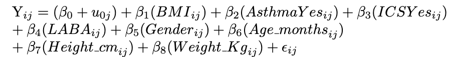

![]()
#lme()
# Fit models using a tidy and clear approach
model_lme <- lme(
fixed = cbind(R5Hz_PP, R20Hz_PP, X5Hz_PP, Fres_PP) ~ BMI + Asthma + ICS + LABA + Gender + Age_months + Height_cm + Weight_Kg,
random = list(Subject_ID = pdIdent(~1)),
data = x_clean,
method = "REML"
)
#lmer()
model_lmer <- lmer(
formula = R5Hz_PP + R20Hz_PP + X5Hz_PP + Fres_PP ~ BMI + Asthma + ICS + LABA + Gender + Age_months + Height_cm + Weight_Kg + (1 | Subject_ID),
data = x_clean
)Inhale, Exhale, Analyze: BMI’s Imprint on Impulse Oscillometry Outcomes
UWF STA 6257 Capstone Project on Linear Mixed Models (LMMs)
Introduction to Linear Mixed Models (LMMs)
Introduction
Understanding Linear Mixed-Effects Models (LMMs)
Linear mixed-effects models are advanced statistical tools designed to handle complex data structures.
These models are essential when dealing with hierarchical organization, repeated measures, and random effects in datasets.
LMMs are particularly useful when traditional ANOVA or regression assumptions—like independence of observations, homoscedasticity, and normality of residuals—are not met.
Software Tools and Resources for LMMs
Tools for Implementing LMMs
The development and use of LMMs are supported by several software packages and programming languages.
Key resources include the
lme4package in R, detailed by Bates et al. (2015), which simplifies the fitting of mixed models, especially those with crossed random effects.For Python users,
Pymer4developed by Jolly (2018) integrates Python with R’s lme4 package, broadening accessibility to these advanced methods.
Applications of LMMs Across Disciplines
Broad Applications of LMMs
LMMs find diverse applications across various scientific domains, addressing unique analytical challenges.
In healthcare, LMMs model pandemic-related mortality changes (Verbeeck et al., 2023) and analyze longitudinal data in clinical trials (Touraine et al., 2023).
In ecology, studies by Harrison et al. (2018) and Bolker et al. (2009) discuss their use in analyzing complex ecological data.
In psychology and neuroscience, LMMs tackle the complexities of repeated measures and nested data structures (Magezi, 2015; Aarts et al., 2015).
Methods - Mathematical Foundations
Linear Algebra
Foundations
LMMs leverage linear algebra and in our case, we are explaining the mathematical concepts for a two-level longitudinal random intercepts model. Index i is used to denote the participant and index t is used to denote the different time points of the observation
\[ Y=X\beta + Zu+ \epsilon \]
Equation 1: the base linear mixed model.
Y is the response vector. Shape N x 1 where N is the number of the number of repeated measures
X is the design matrix for fixed effects. Shape N x p where p is the number of regression coefficients
β is the vector of regression coefficients. Shape P x 1
Z is the design matrix for random effects. Shape N x J where J number of subjects
u is the vector of random effects. Shape J x 1 vector
ϵ is the vector of residual errors. Shape N x 1 vector
Assumptions
The relationship between the predictors and response variable is assumed to be linear, within each level of random effects.
Random effects (u) are assumed to follow a normal distribution with mean zero and variance-covariance matrix G.
\(\gamma \sim N(0,G)\)
Residual errors (ϵ ) are assumed to follow a normal distribution with mean zero and variance-covariance matrix R.
\(\epsilon \sim N(0,R)\)
Random effects (u) and residual errors (ϵ ) are assumed to be independent.
Homoscedasticity is assumed for the residuals across all levels of the independent variables.
Implementation in R
Data is loaded from a CSV file using the read.csv function
Fitting Data to LMMs
The lme() function from the
nlmepackage has parameters to specify random effects structure and estimation method.lmer() function from the
lme4package has similar syntax to the lme() function but differs in how it handles random effects specifications
Hypothesis Testing
- Evaluated using F-tests, Likelihood ratio test, and Shapiro-Wilks tests
The Capstone Project Data
Dataset Overview
Key attributes and measurements in the dataset.
Categorical and numerical variables.
Presence of missing values, espsecially in the
Fres_PPvariable.
Why Linear Mixed Models (LMMs)?
Suitability of LMMs for the dataset.
Multiple observations over time for the same participants.
Handling unbalanced groups, as observed in participant dropout over time.
EDA - Categorical Variables

EDA - Numerical Variables
Outlier Detection and Summary Statistics
- Presence of outliers in variables and their implications.
Participant Dropout Analysis
Significance of participant dropout over time.
Ability of LMMs to handle unbalanced groups
Analysis & Results
The Initial Model
One Random Effect
In this dataset:
Measures of airway resistance and reactance are the variables of interest:
R5Hz_PP,R20Hz_PP,X5Hz_PP,Fres_PP.Controlled variables are present such as
Group,Age,Weight,Height, and other Co-morbidities. These are the fixed effects.Random variability may exist between individual observations which are nested in each subject. These represent the random effects. In the initial model,
Subject_IDwas treated as the sole random effect.
The Initial Model
One Random Effect

The Initial Model
One Random Effect

Implementation
Evaluation
Akaike Information Criterion (AIC) - indicator of model fit without unnecessary complexity.
AIC for lme = 1898.95 (selected as initial model)
AIC for lmer = 2517.37
Assumptions Check - normality.


Finding: the residuals were not normally distributed, so this model does not satisfy the assumptions of LMMs.
The Imputed Model
Satisfying Assumptions
Upon further inspection, outliers were present in most variables.
To improve model performance, these outliers were imputed using the threshold values (i.e., winsorization).
Confirmation of outlier removal was completed using boxplots.
All metrics were then reevaluated.
Evaluation
AIC for lme = 1790.91 (better!)


Finding: the residuals were normally distributed, so this model does satisfies the assumptions of LMMs.
The Final Model
Two Random Effects and Final Fixed Effect
This was a longitudinal study involving multiple observations for each subject over time, and subjects are grouped into two categories (children with sickle cell disease and African-American children with asthma).
Thus, in this final model:
we modeled
Groupas a fixed effect since we were interested in the effect of the group itself on the outcome.Subject_IDshould be a random effect to account for the repeated measures within subjects.Observation_numberwas included as a random slope withinSubject_ID(i.e., nested within Subject_ID).The same visualizations and tests were completed to assess the LMM assumptions.
The Final Model

Implementation
Evaluation
- AIC for lme = 1801.60 (better than initial, but worse than imputed?)


Findings:
The residuals were normally distributed, so this model does satisfies the assumptions of LMMs.
The AIC penalizes model complexity to avoid overfitting, suggesting that the added effects of Group and Observation_number may not be sufficiently increasing model accuracy compared to complexity.
However, these effects may still be relevant given the research goal of the project despite the slight increase in AIC, and thus will be left in the final model.
Conclusion
Overview of Model Evaluations
In our analysis, we compared three Linear Mixed Models: the base model, the model with imputed values, and the final adjusted model, to predict airway resistance and reactance effectively.
We focused on Mean Squared Error (MSE) and Mean Absolute Error (MAE) to assess model performance.


- Findings: The final imputed model achieved the lowest MSE and MAE, indicating superior performance over the other models.
Sample Predictions vs. Actual Data

Figure 24 illustrates a side-by-side comparison of the predicted versus actual values for
R5Hz_PP, a measure of airway resistance and reactance, for 10 random subjects.The close alignment between predicted and actual values represents a low residual error, confirming the model’s high accuracy in predicting
R5Hz_PP.
Conclusion
Our analysis demonstrates that linear mixed models are exceptionally versatile and can effectively handle complex datasets with multiple layers of correlation and missing data, incorporating both fixed and random effects seamlessly.
Our final model accurately predicts airway resistance and reactance given demographic and co-morbidity data, which could aid in better understanding and managing respiratory functions in children with conditions such as Sickle Cell Disease and asthma.
Acknowledgements
The authors thank Dr. Achraf Cohen, for his ongoing mentorship and support.
Questions are welcome and encouraged!